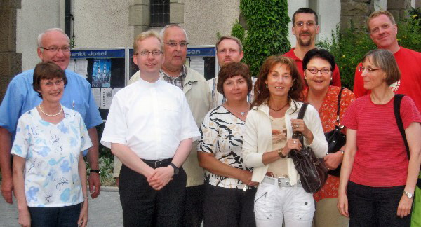

Neuer Pastor für St. Josef
| Mit großem Interesse auf beiden Seiten hat sich der designierte Pastor von St. Josef, Kaplan Burkhard Schmelz, am 30.06.2009 unserem Gemeinderat vorgestellt.
Gleichzeitig hat er, Kaplan Schmelz, mit großer Aufmerksamkeit die angesprochenen gemeindlichen Tätigkeiten der GR-Mitglieder verfolgt und zahlreiche Anregungen aufgenommen. |
|
|
Burkhard Schmelz |
Herr Schmelz hat seinerseits verdeutlicht, gerne Schwerpunkte dort setzen zu wollen, wo er sie, auch nach persönlichem Kennenlernen unserer Gemeinde, als sinnvoll und notwendig erachten wird. Dass sich Kaplan Schmelz auf Grund seiner Lektüre unserer Internetpräsenz an sich in unserer Gemeinde bereits recht gut auskennt, ist im Gespräch immer wieder deutlich geworden.
Unser zukünftiger Pastor ist gebürtiger Bochumer und zur Zeit noch in der Pfarrei St. Gertrud von Branbant in Bochum-Wattenscheid als Kaplan tätig.
Er wird am 25. Oktober 2009 in Haßlinghausen als Pastor eingeführt werden und dann seinen Dienst hier aufnehmen.
|  | |
|
Zukünftiger Pastor B. Schmelz (3. von links) zusammen mit GR-Mitgliedern am 30.06.2009 |
Be 06.07.2009